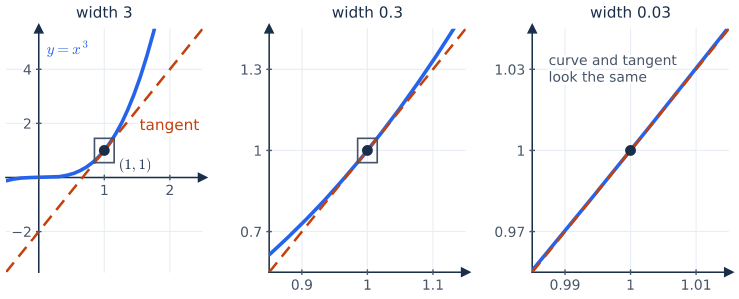
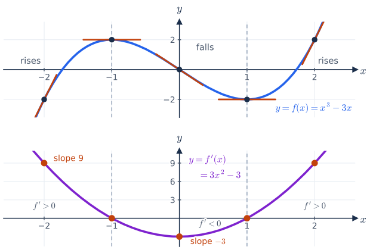
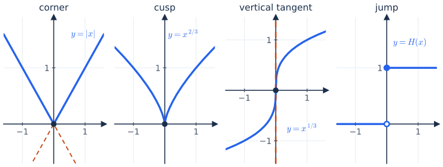
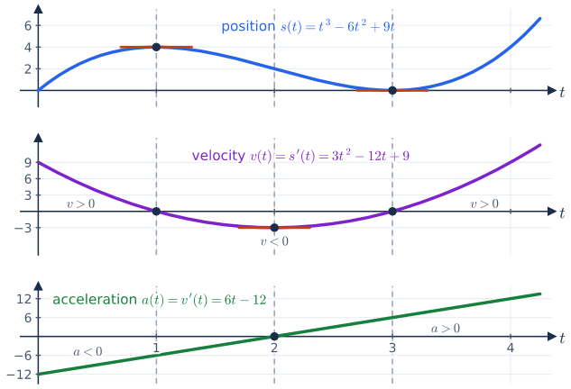

Turn the average rates of Module 1 into instantaneous ones. You will define the derivative as a limit, read it as the slope of a tangent line and as a velocity, prove the first rules of differentiation, and compute derivatives by computer, exactly with SymPy and numerically, where small steps meet the limits of floating-point arithmetic.
⏱ 255 minYou need: Modules 1, 2 and 3
In this module you will
Compute derivatives from the limit definition, and write the equation of a tangent line
Interpret a derivative as a slope, a velocity and a rate of change, with its units
Sketch the graph of f′ from the graph of f, and recognise where a function has no derivative
Prove the power, constant multiple and sum rules, and use them to differentiate polynomials
Find higher derivatives, and the velocity, acceleration and jerk of a moving object
Estimate derivatives numerically, and choose a step that balances truncation and rounding error
1
Tangent lines and velocity
In Module 1 you dropped a ball. After t seconds it has fallen s(t)=4.9t2 metres, and from t=1 to t=1+h its average speed is
hs(1+h)−s(1)=9.8+4.9h(h=0),
as Example 1.12 showed. As h shrinks towards 0, from either side, these averages settle on 9.8 m/s. Module 2 gave that settling a precise meaning, a limit, and found the speed of the ball at every time a, not only at t=1:
The quotient equals 9.8a+4.9h for every h=0, and a limit as h→0 never uses the value at h=0 itself; then direct substitution gives 9.8a. So the ball falls at 9.8 m/s after one second and at 19.6 m/s after two. This limit is what a speedometer on the ball would show.
Definition 4.1Instantaneous velocity
Suppose an object moves along a straight line, and s(t) is its position at time t, measured from a fixed point. Its instantaneous velocity, or velocity for short, at time a is
v(a)=h→0limhs(a+h)−s(a),
provided that this limit exists. Its speed at time a is ∣v(a)∣.
Velocity has a sign: a positive velocity means that the object is moving in the positive direction, a negative one that it is moving the other way. Speed ignores the direction. For the falling ball, with distances measured downwards, the two are the same.
Example 4.1A braking car✓ Checked
Suppose a driver brakes steadily, and t seconds after braking begins the car has travelled s(t)=20t−2t2 metres. (The numbers are made up.) Find the velocity at time a, what the speedometer shows at t=0 and at t=2, and when and where the car stops.
Substitute a+h for t, keeping the brackets, and expand, with (a+h)2=a2+2ah+h2:
Subtract s(a)=20a−2a2: the terms 20a and −2a2 cancel, and s(a+h)−s(a)=20h−4ah−2h2. Every remaining term contains h, so divide by h (allowed, since h=0), then let h→0:
At t=0 the speedometer shows 20 m/s, which is 72 km/h (multiply m/s by 3.6 to get km/h); at t=2 it shows 20−8=12 m/s. The velocity falls by 4 m/s every second and reaches 0 when 20−4a=0, at t=5 s. By then the car has travelled s(5)=100−50=50 m. The formula describes the car only for 0≤t≤5: after t=5 it would have the car reversing, which brakes do not do.
The tangent line
Module 1 described the tangent line at a point P of a curve as the line that the secant lines through P settle on as a second point Q slides towards P (Figure 1.5 shows it for the ball). The slope of the secant through P=(a,f(a)) and Q=(a+h,f(a+h)) is the difference quotient, so the slope of the tangent is the limit of the difference quotients: the same limit as the velocity.
Definition 4.2Tangent line
Let f be defined on an open interval that contains a, and let P=(a,f(a)). If the limit
m=h→0limhf(a+h)−f(a)
exists, the tangent line to the graph of f at P is the line through P with slope m. By the point-slope form of Section 1.4, its equation is
y=f(a)+m(x−a).
The open interval makes sure that f(a+h) is defined for every small h, positive or negative, so that secants can approach from both sides.
Example 4.2The tangent to y=x3 at (1,1)✓ Checked
Find the tangent line to y=x3 at the point (1,1), and find where else it meets the curve.
In Exercise 1.8 you expanded (1+h)3=1+3h+3h2+h3 and found, for h=0,
h(1+h)3−1=h3h+3h2+h3=3+3h+h2.
The table shows these secant slopes on both sides of P:
h
h(1+h)3−1
0.1
3.31
0.01
3.0301
0.001
3.003001
−0.001
2.997001
−0.01
2.9701
−0.1
2.71
They approach 3, from above when h>0 and from below when h<0. By direct substitution, m=limh→0(3+3h+h2)=3, so the tangent line is y=1+3(x−1), that is,
y=3x−2.
It meets the curve where x3=3x−2, that is, where x3−3x+2=0. Since x=1 is a solution, x−1 is a factor (Module 2). To find the other factor, write −3x+2 as −x−(2x−2) and group the terms:
where the last step factors x2+x−2=(x−1)(x+2). So the line meets the curve again at x=−2, at the point (−2,−8). The repeated factor (x−1)2 is the algebraic mark of a tangent: the line meets the curve “twice” at x=1.
Watch out
“A tangent line touches the curve at only one point.” That is true for a circle, not in general: the tangent of Example 4.2 crosses y=x3 again at (−2,−8). And a line that meets a curve only once need not be a tangent: the vertical line x=1 meets y=x3 only at (1,1). What makes a line the tangent at P is its slope, the limit of the secant slopes.
Zoom in on the point of tangency and you see why the tangent deserves its name. Figure 4.1 magnifies the graph of y=x3 around (1,1) tenfold, and then tenfold again. In the first window the curve bends away from its tangent, in the second much less, and in the third the two cannot be told apart. Close to the point, the curve looks straight, and the straight line it looks like is the tangent.

Figure 4.1
Zooming in on y=x3 (blue) at the point (1,1), with its tangent line y=3x−2 (dashed). Each box marks the window of the next panel, ten times smaller in both directions. In the last window, 0.03 wide, the curve and the tangent look the same.
2
The derivative
Velocity and the slope of a tangent are the same limit. So is every other instantaneous rate of change: how fast water drains from a tank, in litres per second; how fast a cup of tea cools, in degrees per minute; how fast the error of a machine-learning model changes as one of its parameters changes. The limit gets its own name.
Definition 4.3Derivative at a point
Let f be defined on an open interval that contains a. The derivative of f at a is
f′(a)=h→0limhf(a+h)−f(a),
provided that this limit exists (as a real number). Then f is differentiable at a. The symbol f′(a) reads “f prime of a”.
Putting x=a+h gives a second form, often more convenient:
f′(a)=x→alimx−af(x)−f(a).
The two forms say the same thing. For every x=a, the quotient in the second form at x equals the quotient in the definition at h=x−a; and ∣x−a∣<δ is the same condition as ∣h∣<δ, so by the ε–δ definition of Module 2 one limit exists exactly when the other does, with the same value.
With this name, three ideas become one.
Key idea
The derivative f′(a) is
the slope of the tangent line to y=f(x) at (a,f(a)), which is y=f(a)+f′(a)(x−a);
the instantaneous rate of change of f at a, measured in units of f per unit of x;
the velocity at time a, when f(t) is the position of a moving object at time t.
Example 4.3A derivative from the definition✓ Checked
Let f(x)=2x2−5x+1. Find f′(2) and the tangent line to the graph at x=2.
First, f(2)=8−10+1=−1. Next substitute 2+h, keeping the brackets, and expand, with (2+h)2=4+4h+h2:
The tangent line is y=−1+3(x−2), that is, y=3x−7. Check that it passes through the point: at x=2 it gives 6−7=−1=f(2).
Try it
Start with f(x)=x2 and a=1; the slider for ∣h∣ runs on a logarithmic scale, from 1 down to 0.001. The purple line is the secant through (a,f(a)) and (a+h,f(a+h)); the dashed orange line is the tangent at a. Press Halve h again and again and watch the secant turn towards the tangent, and the difference quotient approach f′(1)=2: for x2 the quotient is 2a+h, so each halving halves the gap. Switch the sign of h to see secants from the left. Then try x at a=0, where the quotients grow without bound, and type |x| with a=0, where the two sides disagree (Section 4.4). For sinx and ex the widget takes f′(a) from formulas that Modules 5 and 6 prove; for a function you type, it estimates f′(a) numerically, as Section 4.7 explains.
Example 4.4Two more derivatives from the definition✓ Checked
Find (a) f′(2) for f(x)=x1, using the second form, and (b) g′(4) for g(x)=x, using the first. Give the tangent line in each case.
(a) Combine the fractions over the common denominator 2x:
f(x)−f(2)=x1−21=2x2−x=−2xx−2.
Divide by x−2 (allowed, since x=2 inside the limit) and let x→2:
f′(2)=x→2lim(−2x1)=−41.
The tangent line is y=21−41(x−2), that is, y=1−4x. The slope is negative because 1/x decreases; Exercise 1.9 found the same number, −1/a2 at a=2, with the first form.
(b) Putting h=0 in the quotient h4+h−2 gives 00, and the quotient contains a square root, so rationalise, as in Module 2: multiply the top and the bottom by 4+h+2, use (p−q)(p+q)=p2−q2 on the top, and cancel the factor h (allowed, since h=0):
h4+h−2=h(4+h+2)(4+h)−4=4+h+21.
The square root is continuous at 4 (Module 3), so 4+h→2 as h→0, and g′(4)=2+21=41. The tangent line is y=2+41(x−4), that is, y=1+4x. Near x=4 it is a good stand-in for the curve: at x=4.1 it gives 2.025, while 4.1≈2.0248. Module 7 turns this observation into a method, linear approximation.
Watch out
Two slips in derivatives from the definition. First, keep writing “lim” until the step where you let h→0:h3h+2h2=3+2h is true for h=0, but it is not 3; its limit is 3. Second, never put h=0 into the quotient before cancelling: that gives 00, which is not a number. Cancel the factor h first (allowed, since h=0), then let h→0.
3
The derivative as a function
Module 2 and Example 4.1 found velocities at every time at once: 9.8a for the ball and 20−4a for the car. Letting the point vary turns the derivative into a new function.
Definition 4.4The derivative function
The derivative of f is the function f′ given by
f′(x)=h→0limhf(x+h)−f(x)
at every x at which f is differentiable, that is, at which this limit exists in the sense of Definition 4.3. Its domain is the set of those x, which may be smaller than the domain of f. Finding f′ is called differentiatingf.
In the limit, x stays fixed while h moves.
Example 4.5The derivatives of x2 and x✓ Checked
Find f′(x) for f(x)=x2 and g′(x) for g(x)=x, with their domains.
For f:(x+h)2−x2=(x2+2xh+h2)−x2=2xh+h2, so for h=0 the difference quotient is h2xh+h2=2x+h, and f′(x)=limh→0(2x+h)=2x for every real x.
For g, rationalise as in Example 4.4: for x>0 (and h=0 small enough that x+h>0),
hx+h−x=h(x+h+x)(x+h)−x=x+h+x1.
As h→0,x+h→x, because the square root is continuous, so g′(x)=x+x1=2x1 for x>0. (At x=4 this gives 41, as before.) At x=0 the definition does not apply, because x is not defined to the left of 0; and even from the right, the quotient hh−0=h1 grows without bound as h→0+. So g has domain [0,∞), but g′ has domain (0,∞): the graph of x starts out vertically at the origin.
Reading the graph of f′
The height of the graph of f′ at x is the slope of the graph of f at x. That one sentence lets you sketch f′ from a picture of f, without a formula. Figure 4.2 shows f(x)=x3−3x with its tangent lines at five points, and below it the graph of its derivative: each dot on the lower graph records the slope of one tangent above it.

Figure 4.2
Top: f(x)=x3−3x with its tangent lines at x=−2,−1,0,1,2. Bottom: its derivative f′(x)=3x2−3; the dots are the slopes of those five tangents (9, 0, −3, 0, 9). Where the tangent is horizontal, at x=±1 (dashed), f′ is zero; where f rises, f′ is positive; where f falls, f′ is negative.
Example 4.6Reading Figure 4.2✓ Checked
For f(x)=x3−3x, find f′(x) from the definition, and compare it with what the graph of f shows.
Expand (x+h)3=x3+3x2h+3xh2+h3 (multiply x2+2xh+h2 by x+h and collect terms). Then
so the difference quotient is 3x2+3xh+h2−3 for h=0, and
f′(x)=h→0lim(3x2+3xh+h2−3)=3x2−3.
Now compare with the top graph.
The graph of f has horizontal tangents at its peak (−1,2) and at its trough (1,−2). Indeed f′(x)=3x2−3=0 exactly when x=±1.
To the left of −1 and to the right of 1 the graph rises, and there f′(x)=3(x2−1)>0, since x2>1.
Between −1 and 1 the graph falls, and f′(x)<0. It falls most steeply at x=0, where f′(0)=−3 is the smallest value of f′.
A half turn about the origin leaves the graph of f unchanged (f is odd), so it takes the point at x to the point at −x, and the tangent there to the tangent at −x. A half turn turns every line into a parallel one, so these two tangents have the same slope: f′ is even, f′(−x)=f′(x).
The same reading works for any graph.
Key idea
To sketch f′ from the graph of f:
where the tangent to f is horizontal (at peaks, troughs and some flat points), f′=0: the graph of f′ meets the x-axis;
where f rises, f′≥0; where f falls, f′≤0;
the steeper f is, the further the graph of f′ is from the x-axis;
where f has a corner, a cusp, a vertical tangent or a jump, f′ is not defined (Section 4.4).
The second rule follows from the definition. Call fincreasing on an interval if x1<x2 in the interval always gives f(x1)<f(x2) (strictly increasing, in Exercise 1.10), and decreasing if it always gives f(x1)>f(x2). Suppose that f is increasing on an open interval that contains x, and differentiable at x. For every h=0 small enough that x+h lies in the interval, the numerator f(x+h)−f(x) has the same sign as h, so every such difference quotient is positive. Their limit f′(x) cannot be negative: if it were, the quotients for small h would lie within ∣f′(x)∣/2 of it and so would be negative too. The limit can be 0, though: x3 is increasing, yet its tangent at 0 is horizontal. In the same way, f′(x)≤0 where f is decreasing. A partial converse is true as well: if f′>0 at every point of an interval, then f is increasing there. Its proof needs the Mean Value Theorem of Module 8.
Watch out
The graph of f′ records slopes, not heights. At the peak of f, where f is largest nearby, f′ is 0; and f′ can be large where f is negative, as at x=−2 in Figure 4.2, where f(−2)=−2 but f′(−2)=9. Before you sketch f′, ask at each point “how steep, and uphill or downhill?”, not “how high?”.
Notation
Several notations for the derivative are in use, and you will meet them all. If y=f(x), each of these means the derivative:
f′(x)=y′=dxdy=dxdf=dxdf(x)=Df(x).
Notation
Read aloud
f′(x),y′
“f prime of x”, “y prime”
dxdy
“dee y by dee x”
dxdf(x)
“dee by dee x of f of x”
Df(x)
“D f of x”
The prime is compact and names the function. Leibniz’s notation dxdy shows which variable changes, and recalls the quotient ΔxΔy whose limit it is. The symbol dxd is an instruction, “differentiate with respect to x”: dxd(x2)=2x. For the value at a point, write f′(a) or, in Leibniz’s notation,
dxdyx=a,
read “dee y by dee x at x equals a”. For the falling ball, dtds=9.8t and dtdst=2=19.6 m/s. Physicists also write a dot for a derivative with respect to time: s˙, read “s dot”, means dtds.
The units come with the notation: dtds is measured in units of s per unit of t, here metres per second; the derivative of a temperature in degrees Celsius with respect to a time in minutes is in degrees Celsius per minute.
Watch out
dxdy is not a fraction: dy and dx are not numbers here, and you cannot cancel the ds to get xy. (For y=x2,dxdy=2x, while xy=x.) Module 5 shows that it often behaves like a fraction all the same, which is much of its appeal. A second slip: f′(3) means “differentiate, then put x=3”. Putting x=3 first gives a number, and a number does not change, so its derivative is 0: for f(x)=x2,f′(3)=2⋅3=6, but dxd(f(3))=dxd(9)=0.
4
Differentiability
Where derivatives fail
Not every function has a derivative at every point. Figure 4.3 shows four functions that have none at 0. In it, x1/3=3x is the real cube root, defined for every x (Section 1.4), x2/3=(3x)2, and H is the unit step function, H(x)=0 for x<0 and H(x)=1 for x≥0.

Figure 4.3
Four ways to have no derivative at 0. A corner: ∣x∣ has slope −1 on the left and 1 on the right (the dashed lines). A cusp: the slopes of x2/3 fall towards −∞ on the left and rise towards ∞ on the right. A vertical tangent: the graph of x1/3 becomes vertical at 0 (dashed). A jump: the step function H is not continuous at 0.
Since f(0)=0 for the first three functions, their difference quotients at 0 are f(h)/h:
h
h∣h∣
hh2/3
hh1/3
0.1
1
2.154
4.642
0.001
1
10
100
0.00001
1
46.42
2154
−0.00001
−1
−46.42
2154
−0.001
−1
−10
100
−0.1
−1
−2.154
4.642
The three columns behave in three different ways. For ∣x∣ the quotients are 1 on one side of 0 and −1 on the other; for x2/3 they grow without bound, positive on the right and negative on the left; for x1/3 they grow without bound on both sides. Limits from one side, as in Module 2, describe each column precisely.
Definition 4.5One-sided derivatives
The right-hand derivative and the left-hand derivative of f at a are
when these limits exist (as real numbers). A function is differentiable on an open interval if it is differentiable at every point of the interval, and differentiable on a closed interval[a,b] if it is differentiable on (a,b) and has a right-hand derivative at a and a left-hand derivative at b.
The symbols read “f prime plus of a” and “f prime minus of a”. A two-sided limit exists exactly when both one-sided limits exist and are equal (Module 2), so f′(a) exists exactly when both one-sided derivatives exist and are equal, and then all three are the same number. Now the four functions, one by one.
Corner. For ∣x∣, the quotient ∣h∣/h is 1 for every h>0 and −1 for every h<0. So f+′(0)=1 and f−′(0)=−1: both one-sided derivatives exist, but they differ, so f′(0) does not. The graph has a corner, and no single line is its tangent there. Away from 0, ∣x∣ is differentiable, with derivative −1 for x<0 and 1 for x>0. The ReLU of neural networks, max(0,x) (Section 1.3), has a corner at 0 too, with one-sided derivatives 0 and 1; software that trains networks must still return some number there, and usually returns 0.
Cusp. For x2/3, the quotient is h2/3/h=h−1/3=1/3h, which tends to ∞ as h→0+ and to −∞ as h→0−. The graph plunges into the origin and leaves it as steeply: a cusp, where the quotients of a continuous function tend to ∞ on one side and −∞ on the other.
Vertical tangent. For x1/3, the quotient is h−2/3=1/(3h)2, which tends to ∞ from both sides, so the secants become vertical. When f is continuous at a and its difference quotients tend to ∞ from both sides (or to −∞ from both sides), the graph has a vertical tangent at a, the line x=a. Zoomed in, the graph looks like this line, as in Figure 4.1; but a vertical line has no slope, so f′(0) still does not exist.
Jump. For H, with H(0)=1, the quotient for h<0 is hH(h)−H(0)=h0−1=−h1, which grows without bound as h→0−. The next theorem shows that this is no accident: a function is never differentiable where it is not continuous.
Differentiable functions are continuous
Theorem 4.1Differentiable implies continuous
If f is differentiable at a, then f is continuous at a.
Proof
For x=a in the open interval where f is defined, write
f(x)−f(a)=x−af(x)−f(a)⋅(x−a).
As x→a, the first factor tends to f′(a), by the second form of the definition, and the second factor tends to 0. By the product law for limits (Module 2),
x→alim(f(x)−f(a))=f′(a)⋅0=0,
so limx→af(x)=f(a), which is what continuity at a means (Module 3).
∎
The hypothesis does its work in the product law, which needs both factors to have limits that are numbers. For x1/3 at 0 the first factor tends to ∞, and the argument proves nothing (though x1/3 happens to be continuous).
Two consequences are worth separating.
The contrapositive: if f is not continuous at a, it is not differentiable at a. That settles the jump of Figure 4.3, and every other discontinuity, at once.
The converse is false: a continuous function need not be differentiable. ∣x∣,x2/3 and x1/3 are all continuous at 0 (Module 3), and none of them is differentiable there.
So differentiability is the stronger property. Continuity at a says that the graph does not break there; differentiability says, in addition, that zoomed in at a, the graph looks like a line that is not vertical. That rules out corners, cusps and vertical tangents, and other failures too: in Exercise 4.11 a continuous function wiggles so fast near 0 that its secants from the origin never settle on any slope, from either side.
Watch out
“f is continuous at a, so f′(a) exists” is the converse of Theorem 4.1, and it is false: ∣x∣ at 0 is the standard counterexample. A related slip is to trust a formula for f′ at a point where it was not derived. The derivative of ∣x∣ is −1 for x<0 and 1 for x>0, and some programs write it as sign(x); but sign(0)=0 does not make ∣x∣ differentiable at 0. Section 4.5 shows SymPy doing exactly this.
Going deeperDifferentiable means locally linear
Figure 4.1 suggests what differentiability means geometrically: near a, the graph is almost a straight line. Here is the precise statement. For a slope m, let
E(h)=f(a+h)−(f(a)+mh)
be the error of the line y=f(a)+m(x−a) at x=a+h. Then f is differentiable at a with f′(a)=m exactly when E(h)/h→0 as h→0. Indeed,
hE(h)=hf(a+h)−f(a)−m,
which tends to 0 exactly when the difference quotient tends to m. For any other slope m1=f′(a), the same computation gives E1(h)/h→f′(a)−m1=0. So the tangent is the one line through (a,f(a)) whose error shrinks faster than h itself. For f(x)=x3 at a=1,E(h)=(1+h)3−(1+3h)=3h2+h3, so E(h)/h=3h+h2→0; in the last window of Figure 4.1, where ∣h∣≤0.015, the error is at most about 0.0007, too small to see. Module 7 builds linear approximation on this, and Module 17 uses the same idea to define differentiability for functions of several variables.
5
The first rules
Computing every derivative from the definition is slow. A handful of rules, each proved once from the definition, makes it quick: with the rules of this section you can differentiate any polynomial in a line. Module 5 adds the product, quotient and chain rules.
Constants and powers
Look at what the definition has given so far: (x2)′=2x (Example 4.5), and the computation in Example 4.6 shows (x3)′=3x2. The pattern: the exponent comes down in front, and the new exponent is one less. Example 4.6 also shows why. In
(x+h)3=x3+3x2h+3xh2+h3,
the x3 cancels against −x3, the term 3x2h becomes 3x2 after dividing by h, and every other term contains h2, so it still contains h after dividing and vanishes in the limit. That is the idea of the proof, and the proof below carries it out for every power.
Theorem 4.2Constant rule and power rule
For every constant c, every positive integer n and every real x,
dxd(c)=0anddxd(xn)=nxn−1.
In particular, dxd(x)=1 (here x0 means 1, also at x=0).
Proof
Constant. If f(x)=c, every difference quotient is hc−c=0, so the limit is 0.
Power. Write (x+h)n=(x+h)(x+h)⋯(x+h), with n factors. Multiplying out, each term of the result picks either x or h from each of the n factors and multiplies the picks together. Picking x every time gives xn. Picking h from exactly one factor and x from the other n−1 gives xn−1h, and there are n ways to choose that one factor, so these terms add up to nxn−1h. Every other term picks h at least twice, so it contains h2. Collecting those terms,
(x+h)n=xn+nxn−1h+h2Q(x,h),
where Q(x,h) is a polynomial in x and h (and Q=0 when n=1). So, for h=0,
h(x+h)n−xn=nxn−1+hQ(x,h).
As h→0,Q(x,h) tends to Q(x,0) by direct substitution, since it is a polynomial in h; so hQ(x,h) tends to 0⋅Q(x,0)=0, and the quotient tends to nxn−1.
∎
Good to know
Counting the picks exactly gives the binomial theorem. The term xn−khk appears once for each way of choosing which k of the n factors supply an h, so
(x+h)n=xn+(1n)xn−1h+(2n)xn−2h2+⋯+hn,
where (kn)=k!(n−k)!n!, read “n choose k”, counts the ways to choose k things from n (with 0!=1). For example, (x+h)4=x4+4x3h+6x2h2+4xh3+h4. The proof above needs only the first two terms.
The formula nxn−1 seems to work beyond positive integers too: Example 4.4 found the slope of 1/x=x−1 at 2 to be −41=(−1)⋅2−2, and Example 4.5 found (x)′=2x1=21x−1/2. Theorem 4.2 does not prove these, since its proof multiplies out n factors. Module 5 proves the rule for negative integers and Module 6 for every real exponent.
Constant multiples and sums
Theorem 4.3Constant multiple rule and sum rule
Let f and g be differentiable at x, and let c be a constant. Then cf,f+g and f−g are differentiable at x, and
Each rule follows from a limit law of Module 2. For the constant multiple, the difference quotient of cf is
hcf(x+h)−cf(x)=c⋅hf(x+h)−f(x),
which tends to cf′(x) by the constant multiple law. For the sum, write Δf=f(x+h)−f(x) and Δg=g(x+h)−g(x) for the changes in f and g, with the Δ of Module 1. Regrouping the terms, the change in f+g is
(f(x+h)+g(x+h))−(f(x)+g(x))=Δf+Δg,
so the difference quotient of f+g is hΔf+Δg=hΔf+hΔg, which tends to f′(x)+g′(x) by the sum law. Finally, f−g=f+(−1)g, so the first two rules give (f−g)′=f′+(−1)g′=f′−g′.
∎
The hypotheses matter: the formulas need f′(x) and g′(x) to exist. Without them the sum may or may not be differentiable: ∣x∣ and −∣x∣ have no derivative at 0, but their sum, the constant 0, has one.
Applied repeatedly, the sum rule covers sums of any number of terms. In words: the derivative of a sum is the sum of the derivatives, and constant factors come along unchanged. Together, these two rules say that differentiation is linear.
Polynomials
With these rules, a polynomial is differentiated term by term:
dxd(anxn+⋯+a1x+a0)=nanxn−1+⋯+2a2x+a1.
The constant term a0 disappears. So every polynomial is differentiable on R, and its derivative is again a polynomial, of degree one less when the degree is at least 1.
Example 4.7Differentiating a polynomial✓ Checked
Differentiate p(x)=4x5−3x3+7x−2, and find the tangent line at x=1.
By the sum and difference rules, differentiate term by term; by the constant multiple rule, keep each coefficient; then use the power rule and the constant rule:
At x=1:p(1)=4−3+7−2=6 and p′(1)=20−9+7=18, so the tangent line is y=6+18(x−1), that is, y=18x−12.
Example 4.8Horizontal tangents✓ Checked
Find the points where the graph of g(x)=2x3−9x2+12x−4 has a horizontal tangent.
A horizontal tangent has slope 0, so solve g′(x)=0. By the rules,
g′(x)=6x2−18x+12=6(x2−3x+2)=6(x−1)(x−2),
which is 0 exactly at x=1 and x=2. Since g(1)=2−9+12−4=1 and g(2)=16−36+24−4=0, the graph has horizontal tangents at (1,1) and (2,0). For 1<x<2 one factor is positive and the other negative, so g′(x)<0: the tangents there slope downwards. Module 8 proves that the graph then falls from (1,1) to (2,0), and turns this reasoning into a method for finding maxima and minima.
Watch out
Three tempting rules that are false. (1) The derivative of a product is not the product of the derivatives: (x⋅x)′=(x2)′=2x, not 1⋅1=1. Until Module 5’s product rule, multiply out first: dxd((x2+1)(x−3))=dxd(x3−3x2+x−3)=3x2−6x+1.(2) A constant has derivative 0, however it looks: dxd(π2)=0, not 2π, because π2 is a number. (3) The power rule needs the variable in the base and a constant exponent: dxd(2x) is not x⋅2x−1; Module 6 finds it.
Compute itDerivatives with SymPy
SymPy differentiates with sp.diff, which knows the rules of this section and many more. Here is Example 4.7, the derivative at a point, and the definition itself as a limit:
Python
import sympy as sp
x, h = sp.symbols('x h')
p = 4*x**5 - 3*x**3 + 7*x - 2
dp = sp.diff(p, x) # the derivative p'(x)print(dp)
print(dp.subs(x, 1)) # p'(1): differentiate first, then substitute
q = (p.subs(x, x + h) - p)/h # the difference quotientprint(sp.limit(q, h, 0, '+-')) # its two-sided limit: the definition
Output
20*x**4 - 9*x**2 + 7
18
20*x**4 - 9*x**2 + 7
The fourth argument of sp.limit, '+-', asks for the two-sided limit; without it, SymPy approaches from the right only. The answers can look different from yours, because SymPy may factor or reorder:
Python
print(sp.diff(p, x, 2)) # the second derivative (Section 4.6)print(sp.diff(sp.sqrt(x), x)) # Example 4.5
Output
2*x*(40*x**2 - 9)
1/(2*sqrt(x))
2*x*(40*x**2 - 9) is 80x3−18x in factored form, the derivative of 20x4−9x2+7. Now the warning of Section 4.4. With x declared real (for complex numbers SymPy’s answer is more complicated):
For real x=0,sign(x) is right: −1 for x<0 and 1 for x>0. But substituting 0 gives 0, as if ∣x∣ had derivative 0 there, while the one-sided limits of its difference quotient, 1 and −1, show that it has none; with '+-', SymPy would refuse the two-sided limit, as in Module 2. A formula for f′ tells you nothing at a point where f is not differentiable.
6
Higher derivatives and motion
The derivative f′ is a function, so it can be differentiated in its turn.
Definition 4.6Higher derivatives
The second derivative of f is the derivative of f′:f′′=(f′)′. The third derivative is f′′′=(f′′)′, and in general the nth derivativef(n) is the derivative of f(n−1), wherever these derivatives exist. In Leibniz’s notation, for y=f(x),
f′′(x)f(n)(x)=dx2d2y=dxd(dxdy),=dxndny.
Read f′′(x) as “f double prime of x”, f′′′(x) as “f triple prime of x”, f(4)(x) as “the fourth derivative of f at x”, and dx2d2y as “dee two y by dee x squared”. The 2s count differentiations; they are not powers. The brackets in f(4) keep it apart from the power f4.
Example 4.9All the derivatives of a polynomial✓ Checked
and every later derivative is 0 as well. Each differentiation lowers the degree by 1, so a polynomial of degree n has a constant nth derivative, and all its derivatives after the nth are 0. For xn itself the nth derivative is n(n−1)⋯2⋅1=n!; here p(4)=24=4!, because the leading coefficient of p is 1.
Velocity, acceleration and jerk
For an object moving along a line, with position s(t) at time t, the first three derivatives have names:
Quantity
Definition
Units
velocity
v(t)=s′(t)=dtds
m/s
acceleration
a(t)=v′(t)=s′′(t)=dt2d2s
m/s²
jerk
j(t)=a′(t)=s′′′(t)=dt3d3s
m/s³
The units are those for s in metres and t in seconds. Acceleration is the rate of change of velocity: the falling ball has v(t)=9.8t, so its acceleration is constant, a(t)=9.8 m/s², the acceleration due to gravity of Module 1. The braking car of Example 4.1 has v(t)=20−4t and a(t)=−4 m/s²: negative, because its velocity decreases. Jerk, the rate of change of acceleration, is what you feel as a jolt when a lift or a train starts or stops abruptly; lifts, trains and robot arms are designed to keep it small.
The sign of a tells you which way v is changing (Module 8 proves that a positive derivative means an increasing function). So an object speeds up when its velocity and acceleration have the same sign, and slows down when their signs differ.
Example 4.10A particle moving back and forth✓ Checked
Suppose a particle moves along a line so that its position after t seconds is s(t)=t3−6t2+9t metres, for t≥0; the motion is made up, with numbers chosen to be easy to work with. Find its velocity, acceleration and jerk. When is it at rest, when does it move backwards, and when does it speed up?
The particle is at rest when v(t)=0: at t=1, at the position s(1)=4 m, and at t=3, back at s(3)=0. For 1<t<3 the factors t−1 and t−3 have opposite signs, so v<0 and the particle moves backwards; before t=1 and after t=3,v>0 and it moves forwards. In the first 4 seconds it goes forwards from 0 to 4 m, back to 0, and forwards again to s(4)=4 m: it covers 4+4+4=12 m of ground, although it ends only 4 m from where it started.
The acceleration changes sign at t=2. Comparing the signs of v and a:
Interval
v
a
The particle
0<t<1
+
−
moves forwards, slowing down
1<t<2
−
−
moves backwards, speeding up
2<t<3
−
+
moves backwards, slowing down
t>3
+
+
moves forwards, speeding up
Figure 4.4 shows the three graphs. Where s has a horizontal tangent, v is 0; where v has its horizontal tangent, at its lowest point t=2,a is 0: each graph is the slope picture of the one above it.

Figure 4.4
The particle of Example 4.10. Top: its position s(t), with horizontal tangents at t=1 and t=3. Middle: its velocity v(t)=s′(t), zero at t=1 and t=3 and negative in between, while the particle moves backwards; its lowest point is at t=2. Bottom: its acceleration a(t)=v′(t), zero at t=2.
Watch out
Velocity is not speed, and a negative acceleration does not mean slowing down. Between t=1 and t=2 in Example 4.10 the acceleration is negative, yet the particle speeds up: it moves backwards faster and faster, its velocity going from 0 to −3 m/s and its speed from 0 to 3 m/s. Whether an object speeds up depends on whether v and a have the same sign, not on the sign of a alone.
7
Numerical differentiation
Sometimes there is no formula to differentiate. A function may be known only as a program, such as a simulation that takes minutes to run, or only through measurements, such as the positions of a car recorded once a second. Then the derivative is estimated from a few values of the function, with a difference quotient and a small step h. Two choices decide how good the estimate is: which quotient, and which h.
Forward and central differences
Definition 4.7Forward and central differences
For a step h>0, the forward difference and the central difference of f at a are
The error of such an estimate is f′(a) minus the estimate: the exact value minus the approximation, as for every approximation in this series. It is positive when the estimate is too small, and negative when it is too large.
The forward difference is the difference quotient itself, the slope of the secant from a to a+h. The central difference is the slope of the secant from a−h to a+h, over an interval centred on a. It is the average of the forward difference and the backward differencehf(a)−f(a−h), the quotient with −h in place of h. If f is differentiable at a, the forward and backward differences both tend to f′(a) as h→0, and so does their average.
Example 4.11Two differences for x3✓ Checked
For f(x)=x3, find the forward and central differences at a, and their errors.
By the expansion in Example 4.6, (a+h)3=a3+3a2h+3ah2+h3, and with −h in place of h,(a−h)3=a3−3a2h+3ah2−h3. So
Since f′(a)=3a2, the errors, f′(a) minus the estimates, are exactly −3ah−h2 and −h2. At a=1 with h=0.1 the forward difference is 3.31 and the central difference 3.01; with h=0.01 they are 3.0301 and 3.0001. Both estimates are too large, so both errors are negative. A tenfold cut in h cuts the forward error about tenfold in size, but the central error a hundredfold. In the central difference the terms 3ah2, which do not change sign with h, cancel: that is why centring pays.
The pattern holds for other functions. The table shows the two errors for x at a=4, where f′(4)=41 (Example 4.4), computed exactly:
h
41−forward
41−central
0.1
0.001543
−1.954×10−5
0.01
0.0001561
−1.953×10−7
0.001
1.562×10−5
−1.953×10−9
0.0001
1.562×10−6
−1.953×10−11
Each row divides h by 10; the forward error shrinks by a factor of 10 and the central error by a factor of 100. The signs differ: the forward difference is too small here and the central difference too large.
Central differences are also the natural choice for data measured at equally spaced times: the estimate at each inner time uses the measurements on both sides of it. And Exercise 1.11 showed that for a quadratic, such as the falling ball’s s(t)=4.9t2, the central difference is exact for every h.
Compute itVelocities from measurements
Suppose you know the falling ball only from its table of positions in Section 1.3, measured every 0.5 s. Central differences estimate the velocity at the inner times; NumPy’s np.gradient computes the same central differences, with a forward and a backward difference at the two ends:
Python
import numpy as np
dt = 0.5
t = np.arange(0, 3.01, dt) # 0, 0.5, 1, ..., 3
s = 4.9*t**2# the measured positions
central = (s[2:] - s[:-2])/(2*dt) # at t = 0.5, 1, ..., 2.5print(central)
print(np.gradient(s, dt))
print(9.8*t) # the exact velocities
s[2:] - s[:-2] subtracts from each position the one two places before it. The central differences are exact, as Exercise 1.11 predicts. The estimates at the ends, 2.45 and 26.95 m/s, are each off by 2.45 m/s. They are the one-sided quotients 9.8a+4.9h of Module 2, with h=0.5 at t=0 and h=−0.5 at t=3, so their errors are 9.8a−(9.8a+4.9h)=−4.9h:−2.45 m/s at the start and 2.45 m/s at the end.
Truncation error
The error that remains when the arithmetic is exact comes from stopping at a step h>0 instead of going to the limit; it is called truncation error. To compare such errors, use the big-O notation of Module 3, now as h→0 rather than for large inputs.
Definition 4.8Big-O as h→0
An error E(h) is O(hp) as h→0, read “big O of h to the p”, if there are constants C and δ>0 such that ∣E(h)∣≤C∣h∣p whenever 0<∣h∣<δ.
For x3 at a, the forward error −3ah−h2 is O(h), because for 0<h<1,h2≤h and so 3ah+h2≤(3∣a∣+1)h; the central error −h2 is O(h2). A method whose error is O(hp), and no better, has orderp: the forward difference has order 1 and the central difference order 2. Halving h roughly halves an error of order 1, and quarters an error of order 2.
This is not special to x3:
Key idea
If f′′ is continuous near a, the forward difference has error about −2hf′′(a), which is O(h). If f′′′ is continuous near a, the central difference has error about −6h2f′′′(a), which is O(h2). Module 15 proves both, with Taylor’s theorem.
For x3, with f′′(a)=6a and f′′′(a)=6, these give −3ah and −h2, the leading parts of the errors of Example 4.11. For x at 4, where f′′(4)=−321 and f′′′(4)=2563 (by the power rule for fractional exponents, which Module 6 proves), they predict 64h and −512h2; for h=0.1 that is 0.00156 and −0.0000195, close to the first row of the table above.
Rounding error and the best step
On paper, the smaller h, the better. On a computer, not so. Floating-point numbers (Section 1.7) carry about 16 significant digits: the gap between 1 and the next larger number that the computer can store is the machine epsilon
ε=2−52≈2.2×10−16,
and a computed value of f may be off by a few units of ε∣f(a)∣. In the forward difference, f(a+h) and f(a) are nearly equal when h is small, so their difference keeps only the few digits in which they differ: cancellation, as in Module 2. Dividing by the small h then magnifies what is left of the rounding. The part of the error of the quotient that rounding causes, its rounding error, can have either sign; its size is about ε∣f(a)∣/h, and it grows as h shrinks.
So the total error has two parts, which behave in opposite ways as h shrinks. For the forward difference of x3 at 1, where ∣f(1)∣=1, its size is at most about
3h+hε.
The first part, the size of the truncation error, is large when h is large; the second, the size of the rounding error, is large when h is small.
Compute itRounding error in action
Python’s floats are the 16-digit numbers described above. The machine epsilon, and what it means:
Adding 10−16 to 1 changes nothing: the result rounds back to 1. Now the errors, exact value minus estimate, of the two differences of f(x)=x3 at a=1, where f′(1)=3, as h shrinks from 10−1 to 10−15:
Python
deff(x):
return x**3
a, exact = 1.0, 3.0print(f"{'h':>7} {'forward error':>13} {'central error':>13}")
for k inrange(1, 16):
h = 10.0**(-k)
forward = (f(a + h) - f(a))/h
central = (f(a + h) - f(a - h))/(2*h)
print(f"{h:7.0e} {exact - forward:13.2e} {exact - central:13.2e}")
Read down the columns. In the first rows both errors are negative, close to the truncation errors −3h−h2 and −h2 of Example 4.11: both estimates are too large. The forward error shrinks tenfold per row in size, as 3h predicts, down to about −3×10−7 at h=10−7. At h=10−8 it is smaller still, about −4×10−9, but by luck: there the truncation error, −3h−h2≈−3.0×10−8, and the rounding error, about +2.6×10−8, nearly cancel. For smaller h the rounding error takes over, and the error grows again, with either sign. The central error shrinks a hundredfold per row in size, to about 10−10 at h=10−5, stays near that size down to h=10−7, and then grows too. At h=10−15 both estimates are wrong in the first decimal place.
Figure 4.5 plots the sizes of the same errors for 481 values of h. On logarithmic axes a power Chp appears as a straight line of slope p, because log(Chp)=logC+plogh: the sizes of the truncation errors are lines of slopes 1 and 2, and the size of the rounding error a ragged band along ε/h, of slope −1.
Figure 4.5
The sizes of the errors of the forward (blue) and central (orange) differences of f(x)=x3 at a=1, computed in floating point for 481 steps h between 10−16 and 1, on logarithmic scales. On the right, truncation error dominates, along the dashed lines 3h and h2. On the left, rounding error dominates, ragged and close to ε/h (dashed grey). The dotted lines mark the best steps, about 10−8 for the forward difference and 5×10−6 for the central one.
The best step is where the two kinds of error balance. For the forward difference, the bound 3h+ε/h is smallest when its two parts are equal (Exercise 4.12 proves it), at h=ε/3≈9×10−9, where it is about 23ε≈5×10−8. For the central difference, the size of the error is at most about h2+ε/h, which is smallest at h=(ε/2)1/3≈5×10−6 (Module 8 shows how to find such minima), where it is about 7×10−11. The table agrees: its smallest errors, in size, lie near those steps. The central ones, about 10−10, match the estimate; the forward one, −4×10−9 at h=10−8, beats it, thanks to the lucky cancellation (Exercise 4.12 looks at the rows near the best step).
Key idea
A rule of thumb for 16-digit floating point: a forward difference with h≈10−8 gets about 8 correct digits, and a central difference with h≈10−5 about 10. Make h smaller and the answer gets worse, not better. When a is far from 1, scale the step with it, as in h=10−5(1+∣a∣): the widget of Section 4.2 uses that step, with central differences, for the functions you type.
Watch out
“The smaller h, the more accurate the derivative.” True in exact arithmetic, false in floating point. With h=10−15, the forward difference of x3 at 1 is off by about 0.33, in the first decimal place; with h=10−16,1+h rounds to 1 and the forward difference is 0. Choose h by the rule of thumb, or avoid the problem: SymPy differentiates exactly, and automatic differentiation (Module 5) computes derivatives of programs to full precision, without any h.
8
What you learned
The velocity of a moving object and the slope of the tangent line to a graph are both limits of difference quotients. That limit is the derivative, f′(a)=limh→0hf(a+h)−f(a)=limx→ax−af(x)−f(a).
The tangent line at (a,f(a)) is y=f(a)+f′(a)(x−a); zoomed in, the graph of a differentiable function looks like it. A derivative is measured in units of f per unit of x.
The derivative is a function, f′, whose height at x is the slope of f at x; it is written f′(x),y′,dxdy,dxdf(x) or Df(x).
A function has no derivative at a corner, a cusp, a vertical tangent or a discontinuity, nor where its difference quotients keep oscillating. Differentiable implies continuous; continuous does not imply differentiable (∣x∣ at 0).
dxd(c)=0,dxd(xn)=nxn−1 for positive integers n,(cf)′=cf′ and (f±g)′=f′±g′: polynomials are differentiated term by term.
Higher derivatives f′′,f′′′,f(n). For motion along a line, velocity v=s′, acceleration a=s′′ and jerk j=s′′′; an object speeds up when v and a have the same sign.
Numerically, the forward difference has truncation error O(h) and the central difference O(h2). Rounding error grows like ε/h, so in floating point the best steps are about 10−8 and 10−5, and smaller steps make things worse.
SymPy: sp.diff(f, x), sp.diff(f, x, 2), and sp.limit(q, h, 0, '+-') for the definition; a formula for f′ says nothing at a point where f is not differentiable.
9
Exercises
Exercise 4.1★Derivatives from the definition
(a) Use the definition f′(a)=limh→0hf(a+h)−f(a) to find f′(−1) for f(x)=3x2−x, and the tangent line at x=−1.
(b) Use the form limx→ax−ag(x)−g(a) to find g′(3) for g(x)=x2−4x.
Show solution✓ Checked
(a) First f(−1)=3+1=4. Substitute −1+h, with brackets, and expand, with (−1+h)2=1−2h+h2:
The tangent line is y=4−7(x+1), that is, y=−7x−3; at x=−1 it gives 7−3=4. The common slip is to drop the brackets around −1+h in the term −x, which gives −1+h instead of +1−h.
(b)g(3)=9−12=−3, so g(x)−g(3)=x2−4x+3=(x−1)(x−3). Cancel the factor x−3 (allowed, since x=3 inside the limit):
g′(3)=x→3limx−3(x−1)(x−3)=x→3lim(x−1)=2.
Exercise 4.2★Polynomials by the rules
Differentiate:
(a) f(x)=7x4−2x3+x−9
(b) g(x)=(2x−1)(x2+3)
(c) k(x)=xx3−4x, for x=0
(d) s(t)=πt2+π2
Show solution✓ Checked
(a) Term by term: f′(x)=7⋅4x3−2⋅3x2+1−0=28x3−6x2+1.
(b) Multiply out first: g(x)=2x3+6x−x2−3=2x3−x2+6x−3, so g′(x)=6x2−2x+6. Multiplying the derivatives of the factors, 2⋅2x=4x, would be wrong: the derivative of a product is not the product of the derivatives (Module 5 gives the right rule).
(c) For x=0, divide each term by x:k(x)=x2−4. So k′(x)=2x, for x=0:k is not defined at 0, so neither is k′.
(d)π and π2 are constants: s′(t)=2πt, and the constant term π2 contributes 0.
Exercise 4.3★A cooling cup of tea
Suppose a cup of tea is poured at t=0, and its temperature after t minutes is T(t) degrees Celsius, with T(10)=62 and T′(10)=−1.5. (The numbers are made up.)
(a) What are the units of T′(10), and what does T′(10)=−1.5 say in words?
(b) Use the tangent line at t=10 to estimate the temperature at t=10.5 and at t=12.
(c) Does dtdTt=10=−1.5 say the same as T′(10)=−1.5? Does dtd(T(10))=−1.5?
Show solution✓ Checked
(a) Degrees Celsius per minute. Ten minutes after it was poured, the tea is cooling at a rate of 1.5 degrees per minute: its temperature is falling, which is what the minus sign says.
(b) The tangent line is T≈62−1.5(t−10). At t=10.5 it gives 62−0.75=61.25 °C, and at t=12 it gives 62−3=59 °C. The second estimate is less reliable: the tangent line follows the curve only near t=10, and tea cools more slowly as it approaches room temperature.
(c) Yes: dtdTt=10=−1.5 is T′(10)=−1.5 in Leibniz’s notation. No: dtd(T(10)) is the derivative of the number T(10)=62, a constant, so it is 0, not −1.5.
Exercise 4.4★Where is it not differentiable?
For each function, find the points where it is not differentiable, and say whether each is a corner, a cusp, a vertical tangent or a discontinuity. Give the one-sided derivatives where they exist.
(a) f(x)=∣x−2∣
(b) g(x)=(x+1)2/3, with the real cube root
(c) k(x)=x2 for x<1, and k(x)=2x for x≥1
Show solution✓ Checked
(a) Away from 2, f is x−2 or 2−x near each point, so it is differentiable, with derivative 1 or −1. At 2, f(2)=0 and the quotient is h∣h∣, as for ∣x∣ at 0: f+′(2)=1 and f−′(2)=−1. A corner at x=2.
(b) At −1,g(−1)=0 and the quotient is h(h2)1/3=h−1/3, which tends to ∞ as h→0+ and to −∞ as h→0−. A cusp at x=−1, the cusp of x2/3 moved 1 to the left; no one-sided derivative exists there. Elsewhere g is differentiable: the chain rule of Module 5 and the power rule for fractional exponents of Module 6 give g′(x)=32(x+1)−1/3 for x=−1.
(c)k(1)=2, but as x→1−,k(x)=x2→1:k is not continuous at 1, so by Theorem 4.1 it is not differentiable there. A discontinuity (a jump). With k(1)=2, the quotients for h>0 and for h<0 are
h2(1+h)−2h(1+h)2−2=2,=h−1+2h+h2.
So k+′(1)=2, while the left-hand quotient grows without bound as h→0− (its numerator tends to −1), and there is no left-hand derivative. Away from 1, k is a polynomial near each point, hence differentiable.
Exercise 4.5★★Tangent lines with a given slope
Let f(x)=x3−3x2.
(a) Find the points where the tangent line is parallel to the line y=9x+1, and the equations of those tangent lines.
(b) Is there a point where the tangent line has slope −4?
Show solution✓ Checked
(a) Parallel lines have equal slopes, so solve f′(x)=9. By the rules f′(x)=3x2−6x, and
3x2−6x=9⟺x2−2x−3=0⟺(x−3)(x+1)=0,
so x=3 or x=−1. Since f(3)=27−27=0, the tangent at (3,0) is y=9(x−3), that is, y=9x−27. Since f(−1)=−1−3=−4, the tangent at (−1,−4) is y=−4+9(x+1), that is, y=9x+5.
(b) Complete the square: f′(x)=3(x2−2x)=3(x−1)2−3≥−3 for every x. Every tangent line has slope at least −3, so none has slope −4. (The equation 3x2−6x+4=0 has no real solution: its discriminant is 36−48<0.)
Exercise 4.6★★A derivative function from the definition
Let f(x)=x+11.
(a) Use the definition to show that f′(x)=−(x+1)21 for x=−1.
(b) Find the tangent line at x=1.
(c) Explain from the formula why every tangent line of this graph slopes downwards.
Show solution✓ Checked
(a) Let x=−1. Combine the fractions over the common denominator (x+h+1)(x+1):
Divide by h=0 and let h→0; since x+1=0, direct substitution applies:
f′(x)=h→0lim(x+h+1)(x+1)−1=−(x+1)21.
At x=−1,f is not defined, so neither is f′.
(b)f(1)=21 and f′(1)=−41, so the tangent line is y=21−41(x−1), that is, y=43−4x.
(c) For x=−1,(x+1)2>0, so f′(x)=−(x+1)21<0: every tangent line has a negative slope.
Exercise 4.7★★A ball thrown upwards
Suppose you throw a ball straight up at 14.7 m/s from 1.5 m above the ground. If air resistance is negligible, its height after t seconds is y(t)=1.5+14.7t−4.9t2 metres, until it lands.
(a) Find its velocity and its acceleration, and say what their signs mean.
(b) When is the ball highest, and how high is it then?
(c) When does it land, and at what speed? Give both to two decimal places.
Show solution✓ Checked
(a)v(t)=y′(t)=14.7−9.8t m/s and a(t)=v′(t)=−9.8 m/s². Heights are measured upwards, so v>0 means rising and v<0 falling; the constant negative acceleration is gravity, pulling downwards. While the ball rises, v>0 and a<0 have opposite signs, so it slows down; once it falls, both are negative and it speeds up.
(b) At the top the ball stops rising and has not yet started to fall: v(t)=0, so t=14.7/9.8=1.5 s. Then y(1.5)=1.5+22.05−11.025=12.525 m.
(c) The ball lands when y(t)=0, that is, 4.9t2−14.7t−1.5=0. By the quadratic formula,
t=2⋅4.914.7±14.72+4⋅4.9⋅1.5=9.814.7±245.49.
The minus sign gives a negative time, before the throw, so t=9.814.7+245.49≈3.10 s. Then 9.8t=14.7+245.49, so v=14.7−9.8t=−245.49≈−15.67 m/s. The ball lands at about 15.67 m/s, faster than it was thrown, because it lands 1.5 m below the point where it left your hand: it falls 12.525 m from the top, further than the 11.025 m it rose.
Exercise 4.8★★Making a piecewise function differentiable
Find the constants b and c for which
f(x)={x2bx+cif x≤1,if x>1
is differentiable at x=1.
Show solution✓ Checked
Two conditions are needed.
Continuity. By Theorem 4.1, f must be continuous at 1. From the left, f(x)=x2→1=f(1); from the right, f(x)=bx+c→b+c. So b+c=1.
Equal one-sided derivatives. With f(1)=1, the left-hand quotient is h(1+h)2−1=2+h, so f−′(1)=2. For h>0 the right-hand quotient is
hb(1+h)+c−1=h(b+c−1)+bh=b,
using b+c=1. So f+′(1)=b, and the two agree exactly when b=2. Then c=1−b=−1.
So b=2 and c=−1. With these values both one-sided derivatives at 1 are 2, so f′(1)=2. The line y=2x−1 is the tangent to y=x2 at (1,1): the graph leaves the parabola along its own tangent line. If b+c=1, the right-hand quotient contains the term hb+c−1, which grows without bound as h→0+: there is no right-hand derivative, and f is not differentiable at 1, as Theorem 4.1 predicts for a function that is not continuous there.
Exercise 4.9★★Forward and central differences for 1/x
Let f(x)=x1 and a=1, so that f′(1)=−1 (the method of Example 4.4 gives f′(a)=−1/a2).
(a) Show that, for 0<h<1, the forward difference equals −1+h1 and the central difference equals −1−h21.
(b) Compute both, and their errors, for h=0.1 and h=0.01, to six decimal places.
(c) In exact arithmetic, roughly how small must h be for each error to be less than 10−6 in size?
Show solution✓ Checked
(a) Forward: put the two terms over the common denominator 1+h,
1+h1−1=1+h1−(1+h)=1+h−h,
and dividing by h gives −1+h1. Central: over the common denominator (1+h)(1−h)=1−h2,
1+h1−1−h1=1−h2(1−h)−(1+h)=1−h2−2h,
and dividing by 2h gives −1−h21.
(b) The errors are f′(1)=−1 minus the estimates:
−1+1+h1−1+1−h21=−1+hh,=1−h2h2.
At the two steps:
h=0.1: forward −0.909091, error −0.090909; central −1.010101, error 0.010101.
h=0.01: forward −0.990099, error −0.009901; central −1.000100, error 0.000100.
The forward difference is too large and the central difference too small, so their errors have opposite signs.
(c) The sizes of the errors are
1+hh1−h2h2<h,>h2.
The forward error is a little less than h in size, so its size falls below 10−6 when h is about 10−6; at h=10−6 it is 10−6/(1+10−6)<10−6. The central error is a little more than h2, so h about 10−3 suffices: h=0.000999 gives about 9.98×10−7. The central difference reaches the same accuracy with a step a thousand times larger; in floating point that matters, because larger steps suffer less rounding error.
Exercise 4.10★★★The power rule by factoring
(a) Show that for every positive integer n,
xn−an=(x−a)(xn−1+xn−2a+⋯+xan−2+an−1).
(b) Use (a) and the second form of the definition, f′(a)=limx→ax−af(x)−f(a), to give another proof of the power rule.
Show solution✓ Checked
(a) Multiply out the right-hand side. Multiplying the long bracket by x gives
xn+xn−1a+xn−2a2+⋯+xan−1,
and multiplying it by −a gives
−xn−1a−xn−2a2−⋯−xan−1−an.
Every term of the first line except xn cancels against a term of the second line, and every term of the second line except −an cancels against a term of the first. What remains is xn−an. (For n=1 the bracket is the single term 1, and the identity reads x−a=x−a.)
(b) For x=a, divide (a) by x−a:
x−axn−an=xn−1+xn−2a+⋯+xan−2+an−1.
The right-hand side is a polynomial in x with n terms. As x→a, direct substitution turns each term into an−1, so the limit is nan−1. So (xn)′=nxn−1 at every point a: the power rule again, this time without the binomial expansion.
Exercise 4.11★★★Wiggles at the origin
Let f(x)=xsinx1 and g(x)=x2sinx1 for x=0, with f(0)=g(0)=0.
(a) Show that f is continuous at 0 but not differentiable there.
(b) Show that g is differentiable at 0, with g′(0)=0.
(Use the squeeze theorem of Module 2.)
Show solution✓ Checked
(a) For x=0,∣sin(1/x)∣≤1, so −∣x∣≤xsinx1≤∣x∣. Both bounds tend to 0, so by the squeeze theorem limx→0f(x)=0=f(0):f is continuous at 0. Its difference quotient at 0 is
hf(h)−f(0)=hhsin(1/h)=sinh1,
which has no limit as h→0. At h=π/2+2kπ1 it equals 1, and at h=3π/2+2kπ1 it equals −1, for every positive integer k; both lists of h tend to 0. A limit L would have to be within 21 of both 1 and −1 for all small h, which is impossible. So f′(0) does not exist: the secants from the origin swing between slopes −1 and 1 forever.
(b) The difference quotient of g at 0 is
hg(h)−g(0)=hh2sin(1/h)=hsinh1,
and −∣h∣≤hsinh1≤∣h∣, so it tends to 0 by the squeeze theorem: g′(0)=0. The graph of g wiggles infinitely often near 0, but the wiggles are trapped between y=x2 and y=−x2, which both have the horizontal tangent y=0 at the origin, and so does g.
Exercise 4.12★★★The best step size
Section 4.7 bounded the size of the error of the forward difference of x3 at 1 by about 3h+ε/h. More generally, let E(h)=Ch+hK, with positive constants C and K.
(a) Show that E(h)≥2CK for every h>0, with equality exactly when h=K/C. (Expand (Ch−K/h)2≥0.)
(b) So the best step is h∗=K/C, where the two parts of E are equal. Find h∗ and E(h∗) for C=3 and K=ε≈2.2×10−16, and compare with the table in Section 4.7.
(c) Suppose the values of f carried only about 8 correct digits, as with noisy measurements, so that K=10−8. What are the best step and the smallest value of E now?
Show solution✓ Checked
(a) For h>0 both square roots are defined, and
(Ch−K/h)2=Ch−2Ch⋅K/h+hK=Ch−2CK+hK.
A square is never negative, so Ch+hK≥2CK. Equality holds exactly when the square is 0, that is, when Ch=K/h, which means Ch=K/h, or h2=K/C, or (since h>0)h=K/C. At that h the two parts Ch and K/h are equal.
(b)h∗=ε/3≈8.6×10−9 and E(h∗)=23ε≈5.2×10−8. The table in Section 4.7 has its smallest forward error, in size, at h=10−8, the step nearest h∗, as predicted. The error there, about −4×10−9, is much smaller in size than the model’s 5.2×10−8, because by luck the rounding error had the opposite sign to the truncation error and cancelled most of it. At the neighbouring steps 10−7 and 10−9 the errors, about −3×10−7 and −2.5×10−7, have the sizes that the model predicts (3.0×10−7 and 2.3×10−7).
(c)h∗=10−8/3≈5.8×10−5, and E(h∗)=23×10−8≈3.5×10−4. With values good to 8 digits, a forward difference gives only about 4 correct digits, and it needs a much larger step. Noisy data give rough derivatives.
10
Check yourself
1
For f(x)=x2, which expression is f′(3)?
The derivative is the limit of the difference quotient: limh→0h(3+h)2−9=limh→0(6+h)=6. The quotient without the limit is the slope of one secant, not of the tangent. (9+h) replaces f(3+h) by f(3)+h, and that limit is 1, not 6. The last expression has x+3 where x−3 belongs; its limit is 0.
2
If f(2)=5 and f′(2)=−3, the tangent line to the graph of f at x=2 is
The tangent line is y=f(2)+f′(2)(x−2)=5−3(x−2)=−3x+11; at x=2 it gives 5, as it must. y=−3x+5 has the right slope but passes through (0,5), not (2,5);y=−3x−1 comes from 5−3(x+2), a sign slip; y=5x−3 swaps the slope and the value.
3
Which of these functions is continuous at 0 but not differentiable there?
∣x∣ is continuous at 0, but its one-sided derivatives there are −1 and 1, so it has a corner and no derivative. x2 and x3 are polynomials, differentiable everywhere (both have derivative 0 at 0). The step H is not even continuous at 0, so by Theorem 4.1 it is not differentiable there either.
4
dxd(5x4−2x+7) is
Term by term: 5⋅4x3−2⋅1+0=20x3−2.20x4 forgets to lower the exponent; keeping the +7 forgets that a constant has derivative 0; 5x3 lowers the exponent but forgets to bring the 4 down in front.
5
If y=x3, then dxdyx=2 equals
Differentiate first, then substitute: dxdy=3x2, which is 12 at x=2. 8 is the value of y, not of its derivative; 6 is 3x at x=2, which forgets the square in 3x2; 0 is what you get by substituting first and differentiating the constant 8.
6
At a point where the graph of f has a horizontal tangent, the graph of f′
The height of f′ is the slope of f, and a horizontal tangent has slope 0, so f′ is 0 there: its graph meets the x-axis. The other answers describe the shape of f′ itself, which a horizontal tangent of f does not determine; in Figure 4.2, f′ crosses the axis at x=±1 with no horizontal tangent and no maximum there. f′ is undefined only where f is not differentiable.
7
A particle moves along a line with position s(t)=t3−3t metres after t seconds. Its acceleration at t=2 is
v(t)=3t2−3 and a(t)=6t, so a(2)=12 m/s². 9 m/s is the velocity at t=2, and 2 m the position; 6 m/s³ is the jerk s′′′(t)=6, the derivative of the acceleration.
8
In floating-point arithmetic, why is the forward difference of x3 at 1 worse with h=10−14 than with h=10−8?
f(1+h) and f(1) agree in almost all their digits, so their difference loses most of its accuracy, and dividing by the tiny h magnifies the rounding error, about ε/h with ε≈2.2×10−16. The truncation error, −3h−h2, shrinks in size with h;x3 is differentiable everywhere; and 10−14 is stored without trouble, to about 16 significant digits.